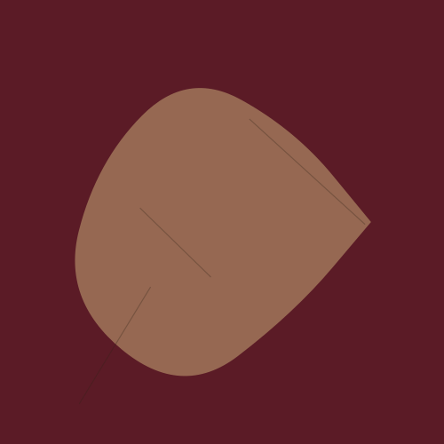
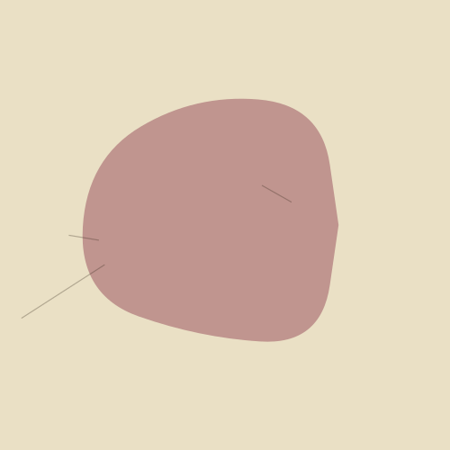
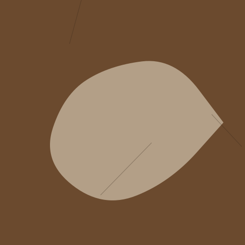
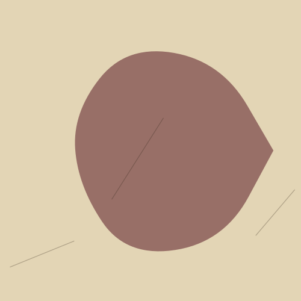

Okuma Notları
Üzerine yazdığım, altını çizdiğim, uzun süre bırakamadığım kitaplar.
-
Orhan PamukBenim Adım Kırmızı
Bir minyatürcünün gözünden bakmak, resmin de bir itiraf biçimi olduğunu hatırlattı bana. Bu kitabı okurken atölyeme bakışım değişti.
-
RilkeGenç Bir Şaire Mektuplar
Her okuduğumda başka bir cümlesi beni durduruyor; bu sefer "sabır her şeydir" oldu. Bir mektup kitabı olması hiç tesadüf değil bence.
-
ProustKayıp Zamanın İzinde
Bir çay kaşığından koca bir çocukluğun çıkması, belleğin nasıl da renklerle çalıştığını gösterdi bana. Yıllardır ara ara dönüyorum.
-
WoolfDeniz Feneri
Bir ailenin, bir evin ve zamanın nasıl aynı cümlede eriyebileceğini ilk bu kitapta gördüm. Bir ressamın gözünden anlatılması da cabası.
-
LispectorYıldızın Saati
Kısacık bir kitap ama bende bir aylık bir sessizlik bıraktı. Bazı kitaplar bitince değil, aradan geçen zamanla anlaşılıyor.
-
TranströmerToplu Şiirler
Bir şairin dünyaya bu kadar az kelimeyle bu kadar çok şey söyleyebilmesi beni her seferinde yeniden yazmaya itiyor.
Kitap Paylaşımları
Kitaplarla ilgili paylaştığım kısa notlar ve alıntılar.

"Bir resmin en güzel yeri, ressamın sakladığı yeridir."

Bugünkü okuma köşem — pencere kenarı, soğuk çay.

Kenarına en çok not aldığım kitap belki de.

Bitirdikten sonra üç gün başka bir şey okuyamadım.